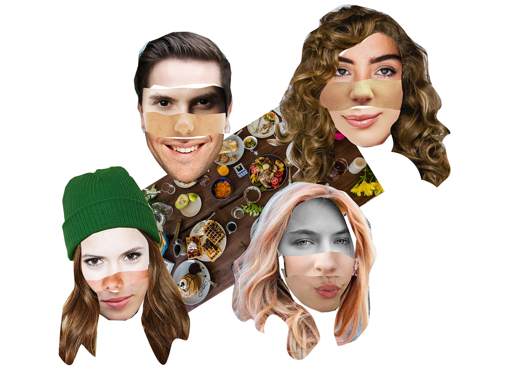
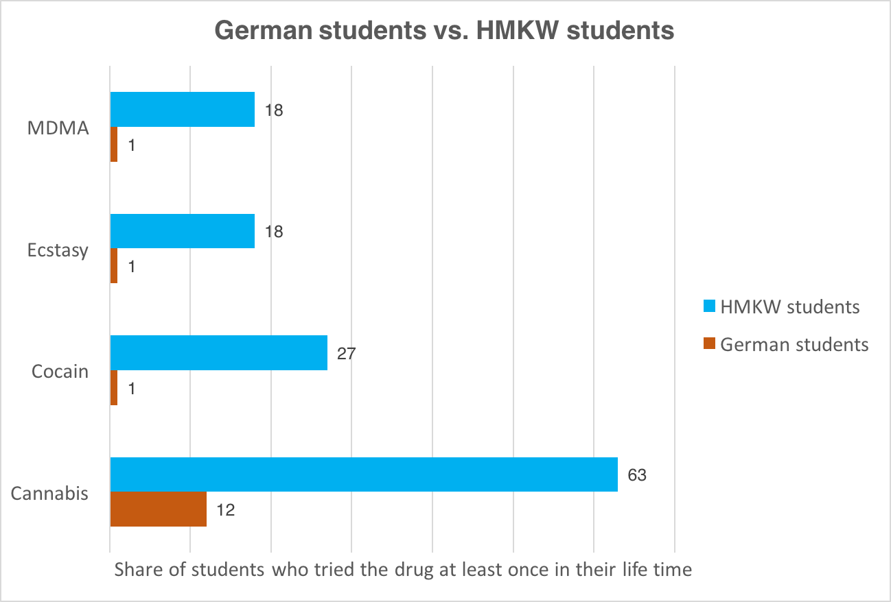

Lisa’s best friends are all studying in a different master course: Cristina in Communication and Design, Jane in Convergent Journalism and Pablo in Business and Psychology. They are her best friends, and they have so much in common. They are all between 21 and 25, were not born in Germany, go out once or twice a week and eat veggies every day. Maybe that’s why they are eating ratatouille tonight.

But don’t let their healthy eating habits trick you, these girls knows how to party! As soon as the dinner is over, they all get ready and hit their favourite club in Berlin. And yes, they will use drugs. Why? Because HMKW students use much more drugs than the average German student.

Click here for more information about drug usage among german students
Such a divergence deserves an explanation. First of all, our data don’t have a scientific value. We couldn’t control the sample on which we based the evaluation to make sure that it respected the composition of HMKW’s students. We also couldn’t control the way in which the survey itself was filled. Nonetheless, the survey can claim solidity. We collected a respectable amount of answers 150 on about 2000 students. We also repeatedly improved the survey on the base of several tests in order to make it as easy and quick to fill as possible.
Most importantly, the way in which we collected the data (through mobile phones or any other device, mainly at the university’s cafeteria where the students were chilling) made the respondents feel very confortable and possibly drove them to more openness than what a more standardized and more rigid kind of survey could achieve.